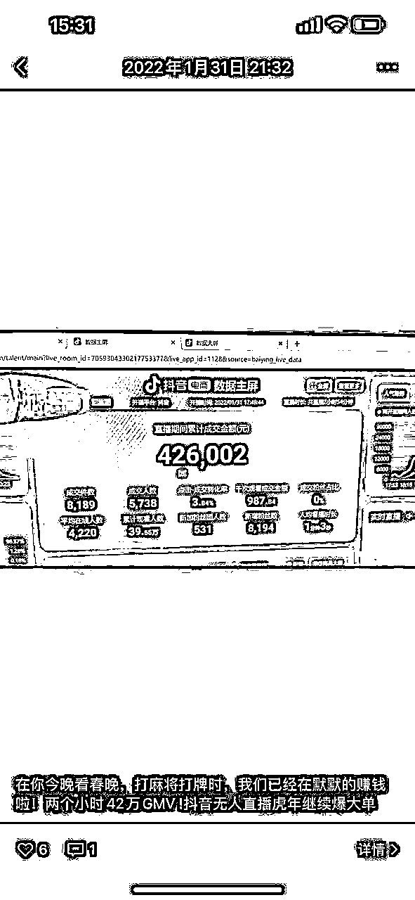
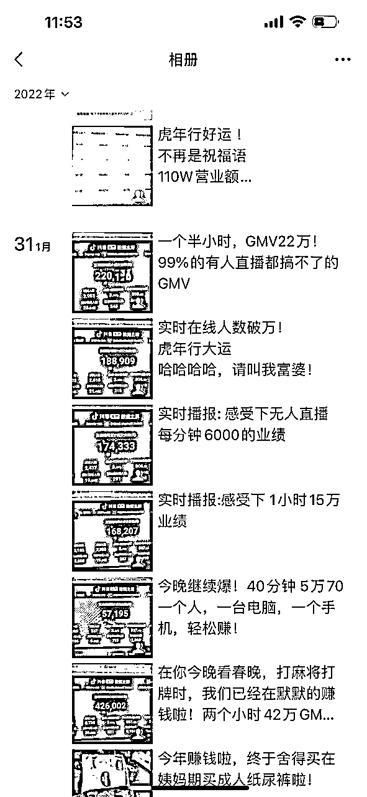
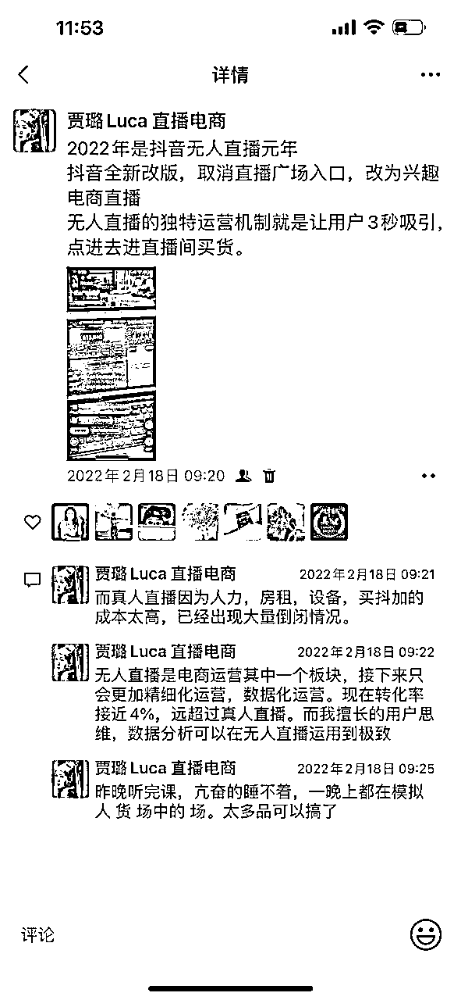
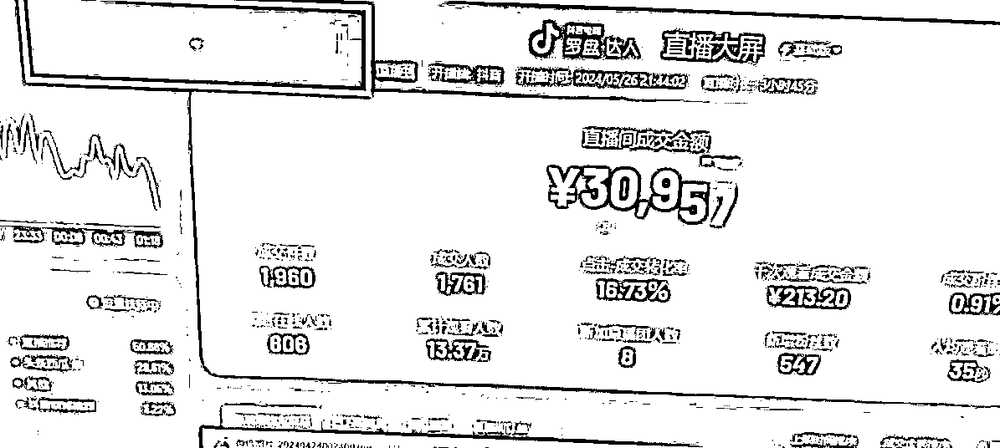
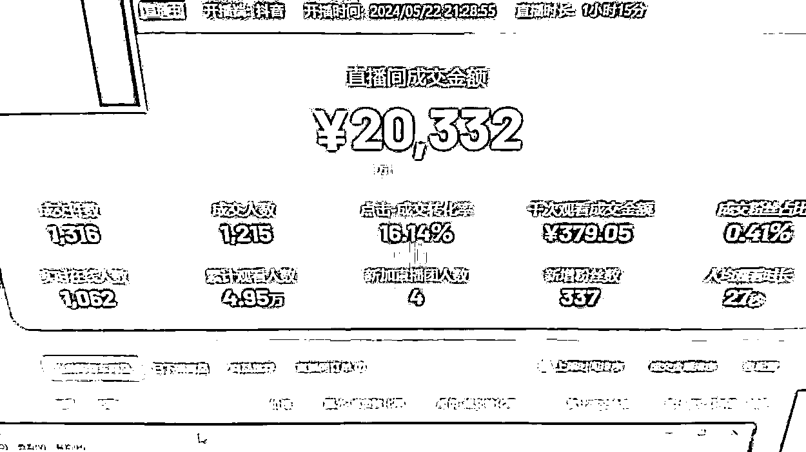

来源：https://r7weuqivm5.feishu.cn/docx/XT1cdh3SfoGWu7x34Q8cnfMLn9e
之前给大家介绍过一些无人直播的发展和基础，在2024年，一方面全民下场做短视频搞钱，另一方面头部主播被查税查合规纷纷上岸转型，无人直播的模式发生了怎样的变化呢？下面结合我们这几年操盘的感受分享一下。
先介绍下自己，贾璐luca，江湖人称璐姐，哈哈哈，2019年入行无人直播，算是入行最早的一批操盘手，4年多的时间，从最开始的音频无人直播，短视频卖惨引流直播间，从快手再回到抖音纯自然流，经历了无人直播所有的阶段，现在在杭州规模化运营无人直播了。这几年陆陆续续的学费也花了大几十万。没有财富自由，但也赚到了广州一套房还有2个孩子以后的教育基金。
有关：无人直播小白必看的7问7答！还有无人直播带货实操这两块内容，可以查看星球里我另外发布的文章
年年我们都说赚钱难，经济环境差，不过今年对这个问题的争议应该小了，地产、贷款、保险、理财、教培、游戏，很多顶层行业都缺乏增长，持续收缩，这使得很多人被甩了出来，除了滴滴美团奶茶咖啡，短视频是大家再就业的首选赛道，门槛低，不需要大量资金投入，见效快。这么想，似乎短视频似乎变得拥挤了，我们也确实能看到很多素人开始做短视频和直播了，那无人直播，半无人矩阵电商已经不是一个好项目了？
我觉得：是好项目，也不是人人能做的好项目
2022年时，随便一个号都能跑50万，100万，2年过去了，现在一场直播平均几万块钱，只能怀念当时的辉煌，但相对比其他行业还是稳赚不赔的，毕竟启动成本低，日常投入很小，电脑一个月租金200，二手手机600，一个月电费200，软件费300。



这是2022年的辉煌，我称为无人直播元年，哈哈哈！十几个小时几十万GMV，佣金达到25%


现在一场直播下来基本是几万的GMV，虽然跟2年前比少很多，但当下，我们已经是无人直播技术top级别了，很多同行都做不到。
作为4年无人直播操盘，经过大周期的无人直播玩家，对2024年是否还能做这个问题有几个更深入的观察。希望看完对圈友有帮助。
很多新近入行的创业者，对内容创业的理解还在5年前，以播放、粉丝这类指标作为经营的关注点，想的还是怎么做个大号，再来想办法接商单变现，所以要想办法做精致漂亮的内容，研究打光，运镜，设备，这种思维对于不理解流量变现的玩家来说是很自然的，在今天这个流量环境下，这种过于长的变现路径其实根本没有意义，大量的内容创业者加入使得平台根本不缺内容，普通人想平地做起来一个大号的机会低的离谱，想靠这条路赚到钱，注定是血流成海。
不知道大家还记不记得，2021年直播电商的王者是薇娅和李佳琦，他们俩当年带货GMV的总和超过1000亿，带货收入预计超过100亿，淘宝的第三名gmv还不到10个亿；后来王座轮替，罗永浩，辛巴，小杨哥轮流坐上宝座然后下场；他们退场显然不是因为几亿几亿的赚钱太累了，主要还是监管和平台的需求和压力，打压的原因很复杂，涉及到国家的监管思路调整，地方政府的财政困境，平台需要多元化内容；以后大家有兴趣再单独讲，这里只想说，因为对头部主播的限制，相关的交易gmv流量被释放出来，中小玩家整体的机会前所未有，这也是我们认为直播电商整体依然大有可为，值得all in的重要原因。
短视频粉丝经济发展到现在，在其实变现的路已经很明确，就下面几个
电商最重要的底层逻辑始终是人 货 场的匹配，无人直播的目的是商品销售活动，所以这与传统的线下零售和传统电商没有本质区别，结合流量特点，结合观众的特征，把合适的商品选出来，推出去，仅此而已。
直播电商场景下的客户需求多年以来始终是确定的，低价、决策成本低、买不了吃亏买不了上当、适合普通人的产品，而因为内容质量限制，无人直播目标客户始终是追逐性价比的群体，而因为过去的经济形势变化，性价比导向的群体前所未有的强大。这是我们对项目一直坚持的信心来源。
前面说到，头部主播被持续打击，有些做垃圾内容会觉得有机会了，请记住：平台和监管打击巨头的目的可不是给这些做垃圾内容的腾地方，诈骗、争议内容、恶意营销的压力也同样大，可以看下最近的一些大主播停播或者被司法处理就明白了。
这个对我们无人直播也是利好，我们的内容其实完全合规，只是质量一般，在平台眼里属于不太拿的出手，但是没有实质风险，其他玩家被打压，腾给我们的机会只会更多。
说了很多行业的变化，监管的调整也使得无人直播有了很多新变化：
综合来说，经过行业洗礼，无人直播依然大有可为，然而随着合规形式和玩家涌入，直播技术、操盘能力、运营和数据分析能力，都将成为以后的无人直播操盘手的必备能力，而这些能力，也是我接下来会持续和大家输出的，完善技术能力，安全稳定可持续赚钱。